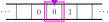
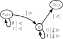

Turing Machines
So far, we've seen what it means to design string representations of decision problems and functions. We also saw the \(\lambda\)-calculus, which is a way of writing down functions syntactically and using rewrite rules as a form of computation. This is one way to design string-functions \(g \colon A^* \to A^*\) (using rewrite rules). Today we're going to look at a different way, something called a Turing machine.
Roughly, a Turing machine is a kind of "mathematical model of computer hardware". It beefs up the stack automaton concept by adding a more powerful type of data structure to automata: a tape machine.
Tape Machines
In the case of stacks, these were three basic commands, including \(\mathtt{skip}\), \(\mathtt{pop}~\sigma\), and \(\mathtt{push}~\sigma\), that operated on a finite list of symbols that represented a stack. A tape machine (as we will define below) is a lot like a stack: it can run a set of basic commands that alter the state of a particular type of memory, which can be combined in sequence to form programs. We fix ahead of time a set \(A\) of tape symbols.
The set of tape head programs \(\mathtt{Tape}\) is derived from the following grammar: \[ E \to \mathtt{skip} \mid \mathtt{write}~\sigma \mid \mathtt{move~left} \mid \mathtt{move~right} \mid E{.}E \] Above, \(\sigma\) ranges over \(A \cup \{\_\}\). Given a tape machine \((t, i)\), we define \[\begin{aligned} (t,i).\mathtt{skip} &= (t, i) \\ (t,i).\mathtt{write}~\sigma &= (t', i) &\text{where } t'(j) = \begin{cases} \sigma & \text{if } i = j \\ t(j) & \text{if } i \neq j \end{cases}\\ (t, i).\mathtt{move~left} &= (t, i-1) \\ (t, i).\mathtt{move~right} &= (t, i+1) \end{aligned}\]
When convenient, we will use the notation
- \({\downarrow}\sigma = \mathtt{write}~\sigma\)
- \(\not{\!\downarrow} = \mathtt{erase} = \mathtt{write}~\_\)
- \({\lhd} = \mathtt{move~left}\)
- \({\rhd} = \mathtt{move~right}\)
Intuitively, \((t, i)\) represents a list of symbols (the tape) that stretches infinitely long in both directions, paired with a read/write-enabled device (the tape head).
At each position (represented as an integer), a symbol \(\sigma \in A\) can appear on the tape at that position, or the tape at that position could be blank (formally represented as "\(\_\)").
Below, the tape head is represented in pink/purple and the tape is represented as the array of squares (called cells) that streches in both directions.

For an example of a tape machine running a tape program, let the tape machine directly above be called \((t, 0)\).
Then \(t(0) = 0\), \(t(1) = 1\), and \(t(-1) = 0\).
Running the program \((t, 0).p\) where
\[
p = \mathtt{write}~1.\mathtt{move~right}.\mathtt{write}~0.\mathtt{move~left}.\mathtt{move~left}.\mathtt{write}~1
\]
flips all the bits.
This would produce the tape below:

Turing Machines
A Turing machine is to tapes and automata what a stack automaton was to stacks and nondeterministic automata.
- \(Q\) is a finite set of states, or programs,
- \(A\) is a set of tape symbols, and
- \(\delta\) is a relation \[ \delta \subseteq Q \times (A \cup \{\_\}) \times \mathtt{Tape} \times Q \] called the transition relation.
We say that \(x\) immediately halts on input \(\sigma\) if \(\delta(x, \sigma) = \{\}\).
A Turing machine should be thought of as "hardware" (as opposed to \(\lambda\)-terms, which should be thought of as "software") in the sense that we would normally think of hardware. Indeed, your actual, physical computer has a hard drive (or SSD, whatever) + RAM for its tape, and its states and transitions consist of all of the different programs that you can run on it. In this picture of Turing machines, the tape programs themselves are the possible machine instructions, and the tape head is the physical position of the reader/writer in the memory hardware!
States as Programs
The states of a Turing machine are honest-to-goodness programs, in the following sense: the transition \(x \xrightarrow{a \mid \rhd{.}{\downarrow}0} y\) should really be interpreted as a "line of code in the program \(x\)", namely
| x = | if a move right.write 0.goto y |
| y = | if a write 0.goto x |
Just like in ordinary programming, it's useful to have a library of "common procedures" at your disposal. Let's take a look at a couple examples.
| x_hlt = |
In the next example, we revisit the program you wrote near the beginning, that "nukes" the tape. As it is presented, we assume that \(A = \{0,1\}\) (more on that later), but it can be adapted to any set of tape symbols.
| x_clr = |
if _ move right.goto y if 0 move left.goto x_clr if 1 move left.goto x_clr |
| y = |
if _ halt if 0 erase.move right.goto y if 1 erase.move right.goto y |
If we were to draw the program halt and its Turing machine, it would consist of three states (remember halt!). 
The program \(\mathtt{clear}\) is really useful if we are careful to have all of the cells used by our program appear contiguously. Then it really clears the tape!
The most important thing to note about Turing machine programs is that at every step, the next step is completely determined by the tape symbol under the tape head at that very instant.
String Transformers, Recognizablility, and Decidability
So, we've focused a lot on decision procedures throughout the course, but at this point, Turing machines don't have any "accept" or "reject" states. What's up with that? This subsection is going to show you how everything we have done so far can be placed in the context of Turing machines: decision procedures for languages, string functions, and all.
As we mentioned at the top, a state in a Turing machine (i.e., a program!) acts as a "string transformer". The way this works goes like this: start by writing your desired input string to a tape machine, and move the tape head to \(0\). Now run the machine until it halts!
A run of \(\mathcal T\) starting from \(x\) on input \(w\) is a path through \(\mathcal T\) of the form \[ (x, t, 0) \xrightarrow{b_1 \mid p_1} (x_1, t_1, i_1) \xrightarrow{b_2 \mid p_2} (x_2, t_2, i_2) \xrightarrow{b_3 \mid p_3} \cdots \xrightarrow{b_k \mid p_k} (x_k, t_k, i_k) \qquad\qquad (\dagger) \] such that the following conditions are met:
-
for any \(0 \le j < k\), \(b_{j+1} = t_{j}(i_j)\)
(i.e., the symbol read by the tape head at each position \(i_j\) is the input symbol for the next step \(b_{j}\)) -
for any \(0 \le j < k\), \((t_{j+1}, i_{j+1}) = (t_j, i_j).p_{j+1}\)
(i.e., the state of the tape machine at each step is obtained by running the tape program on the previous state of the tape machine)
The run \((\dagger)\) is called a halting run, and we say that \(x\) halts on input \(w\), if furthermore,
-
\(x_{i_k}\) immediately halts on input \(t_{k}(i_k)\)
(i.e., there are no outgoing transitions from \(x_k\) for the tape symbol under the tape head at the end of the run)
If a program halts on every input string, it really determines a string function: given a string \(w\), we run the program \(x\) in the machine \(\mathcal T\) on input \(w\), and then when it halts, we read the tape again. If we ignore all of the blanks (remove all the whitespace), then we obtain a new string, \(u\), and call it \(\mathcal T_x(u)\). The only technicality to take care of is the awkward issue of halting. Indeed, it is easy to come up with programs that never halt!
As a brief aside, we can now define what it means for a general function to be computable.
Recognizability
The languages that a particular program halts have a special name, which we can write down now.
Decision Procedures
Note that recognition has nothing to do with accept/reject. It really just determines the set of strings that a computable string transformer is defined on. Decision procedures are a bit different: let's fix two symbols in our alphabet of tape symbols, call them accept \(\top \in A\) and reject \(\bot \in A\).
We use \(\top\) and \(\bot\) just so that we can call these symbols whatever we like, but we'll usually take \(1 = \top\) and \(0 = \bot\).
The next example contains two programs that will come up a lot in the context of decision procedures.
| x_acc = | clear.goto y |
| y = | write \(\top\).halt |
| x_rej = | clear.goto y |
| y = | write \(\bot\).halt |
Note that in the programs above, we wrote \(\mathtt{clear.goto~y}\). This doesn't quite make sense at this point, because \(\mathtt{clear}\) is the program corresponding to a state, not a tape program. The way you should read this is run program \(\mathtt{clear}\) and when it halts, runt he program \(\mathtt{y}\).
Decidability is a much stronger condition than recognizability.
| x = | decide \(L\).goto y |
| y = | if \(\top\) halt if \(\bot\) diverge |
That being said, basically every language we have seen so far is decidable! The easiest examples to see are the regular languages, but I will let you figure that out yourself.
We could show that every context-free language is decidable at this point, but that proof is easier if we have a couple extra tools. We'll see those next time.
A brief historical note
Strangely, in the history of computing, Turing machines came after the \(\lambda\)-calculus, and a little while later it was shown that they are equally as powerful as the \(\lambda\)-calculus, in the sense that they compute all of the same functions on \(\mathbb N\).